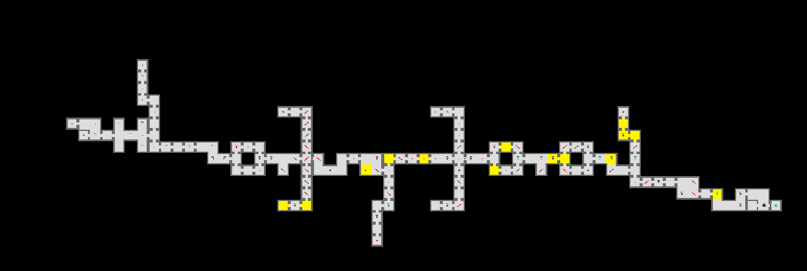
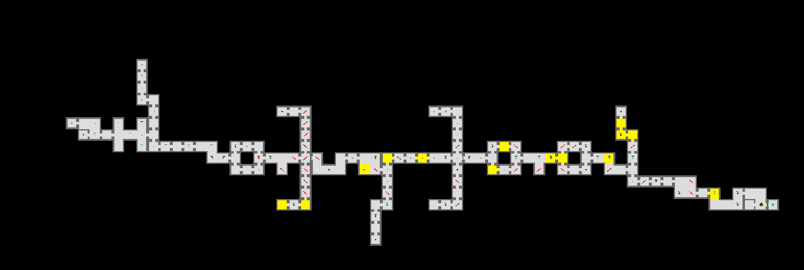

SP4
 

Game Overview
Azurevania is a 2D co-op puzzle–shooter inspired by Fireboy and Watergirl, MapleStory, and Metal Slug. Players explore interconnected levels, solve cooperative puzzles, and fight enemies to grow stronger together.
Gameplay
Players start in a central map with a short tutorial. Both begin with basic infinite–ammo weapons and must cooperate to unlock stronger gear. Many areas require one player to activate mechanisms or protect the other, reinforcing the theme: “Stronger Together.”
Key Features
Multiplayer Puzzles
All puzzles require two players and cannot be solved alone.
Loot Boxes
Enemies drop randomized loot that affects player strength and strategy.
Interconnected Levels
After clearing an area, players choose their next path — each with different enemies, risks, and rewards.
Controls
- A / D – Move
- Space – Jump
- Q – Armor Slots
- E – Inventory
- R – Reload
- O – Sound Options
- F – Interact
- Left Click – Shoot
- Right Click – Switch Weapon
Additional Systems
NPCs provide tips or sell items. Portals are used for entering and exiting boss rooms. Inventory allows potion usage and item sharing.
Armor Sets
Matching armor grants bonus stats.
Tiers: Ancient > Fight > Jade > Gold > Leather
My Contributions
- Weapons & Bullets
- Particle Effects
- Player Info, Controls, Animations
- HUD (Player HP, Boss HP, Weapon, Ammo)
- Music & Sound Effects
- Parallax Background & Camera Shake
- NPC Guide, Portals, Respawn
- RakNet → Forge Networking Integration
← Back to Portfolio